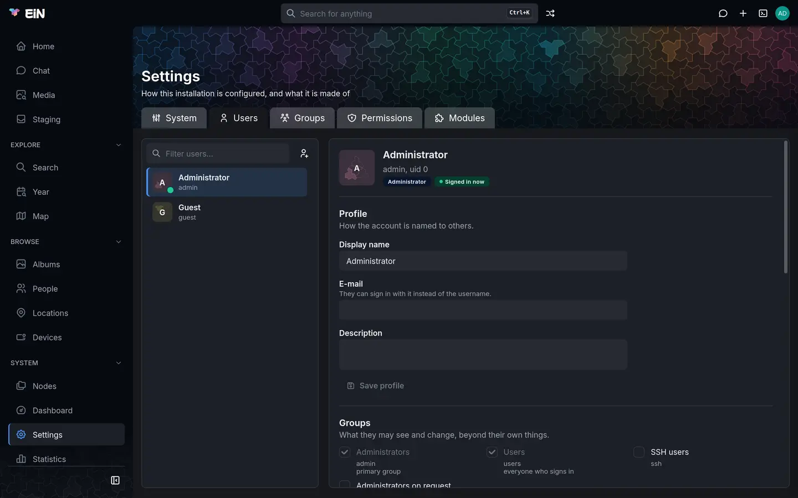
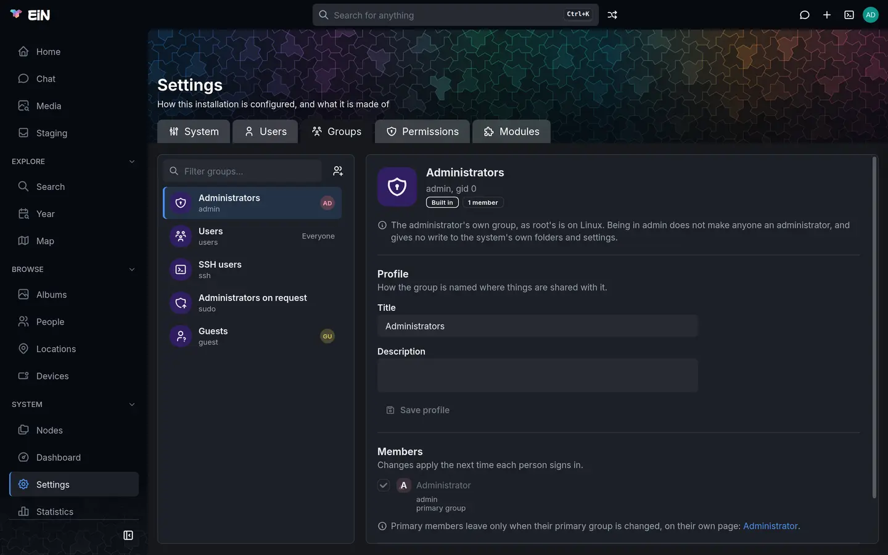
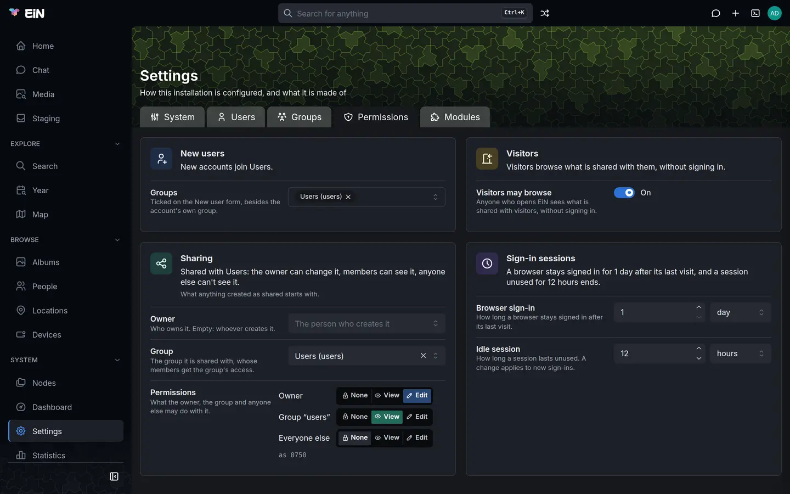

This page is for the administrator who gives people accounts in EiN and puts them in groups. It covers the Users, Groups and Permissions tabs of Settings, the built-in accounts and groups, how to let a second person administer, and the same work in the terminal.
What a group may see and change is decided by the sharing of each album and folder, not here. Sharing shows how to share with a group, and Permissions in depth explains owners, groups and modes.
Where accounts are managed
Choose Settings under System in the sidebar. The Users, Groups and Permissions tabs are there only while you act as the administrator; anyone else sees Modules alone.
On Users and Groups, nothing opens over the page. The list is on the left; pick an entry and its panel opens beside it, where each change is made as you make it. The button beside the list's filter makes a new entry: New user on Users, New group on Groups. On a wide screen the list and the panel fill the window side by side and each scrolls on its own. On a phone or in a narrow window they take turns: the panel has All users or All groups above it, and the browser's Back button returns to the list too.
The open entry is part of the address, such as /settings?tab=users&user=helen, so you can
bookmark an account or send the link to another administrator.
The accounts and groups EiN starts with
EiN makes these at its first start, and none can be deleted. The two accounts are marked Administrator and Guest in their panels, and each of the groups Built in.
| Account | Title | What it is |
|---|---|---|
admin |
Administrator | The administrator. It cannot be disabled or deleted. Its first password is INITIAL_ADMIN_PASSWORD in ~/ein/.env, which setup.sh prints at the end of each run until you delete that line; First steps shows how to change it. |
guest |
Guest | Who a visitor browses as when Visitors may browse is on. It has no password, cannot be given one, and its groups give it nothing. |
| Group | Title | What it is for |
|---|---|---|
admin |
Administrators | The admin account's own group, as root's is on Linux. Being in it does not make anyone an administrator and gives no write to the system's own folders and settings. |
users |
Users | Every account that signs in belongs to it, without being added. Sharing with users shares with everyone who has an account. |
ssh |
SSH users | Its members may use ssh, scp and ssh-copy-id to reach other machines from EiN. See Reaching other machines. |
sudo |
Administrators on request | Its members may act as the administrator for one sign-in, after entering their own password again. See Let a second person administer. |
guest |
Guests | The guest account's own group. What this group may see, visitors may see. |
Besides these, every account made on the Users tab or with user-create gets a group of its own,
named like the account: Helen Okafor's account helen has the group helen. These are its
personal group.
Create an account
- Open Settings → Users and choose the New user button beside the filter.
- Type the person's Name, such as Helen Okafor.
- E-mail is optional. With one, the person can sign in with it instead of the username. No two accounts can have the same address, and EiN sends no e-mail to it.
- Check Username. It is suggested from the name (
helen) until you type one. It is lower case, holds only letters, digits and._-, starts with a letter or_, and cannot be changed later. It cannot be the name of an existing account or group. - Type a Password and Repeat it, or leave both empty to set the password later. An account without a password cannot sign in.
- Under Groups, Users is ticked and greyed: everyone who signs in is in it. The groups set as the default for new users are ticked already (see What new accounts start with). Tick or untick the others.
- Choose Create user.
EiN says "Created helen." and opens the new account. The account has a home folder,
/home/helen, which holds the person's own things, such as what they upload to staging, and a
personal group helen.
While something is missing, Create user says why under it: "Choose a username", "Already taken", "Repeat the password" or "The passwords do not match". If the account was made but its password could not be set, the account opens with the reason in its Password section; set the password there.


Change an account
Pick the account in the list. Its panel shows its picture, display name, username and uid, and badges for its state: Administrator, Guest, Disabled, Needs a password or Signed in now. Below are four sections, each saved on its own.
Profile
Display name, E-mail and Description, saved with Save profile. The display name is how the account is named to others; the person can change their own name and description too, on their profile (see Your profile). Only an administrator sets the e-mail address. Empty the field and save to remove it.
The account's picture is not set here: it is the cover photo of the person in the archive that the account is linked to. Your picture and the person you are shows how to make that link in the terminal.
Groups
A box per group: tick to put the person in, untick to take them out. Each box saves as you click it. Some boxes are ticked and greyed, with the reason beside them:
- everyone who signs in: the
usersgroup. - primary group, or their own group, primary: the account's primary group, which it leaves only when its primary group is changed.
Other people's personal groups are listed only while this account is in one.
Primary group is the group that files the person creates belong to, unless they are created as shared. It starts as the personal group. You can pick any shared group instead.
Password
Type a New password, Repeat it, and choose Set password. Password set appears beside it. Their current password stops working at once, in the browser and over SSH and SFTP, but browsers and terminals where they are signed in stay signed in.
EiN has no rules for passwords: it takes any password that is not empty. It has no "forgot password" by e-mail and cannot make someone choose a new password at their next sign-in. When someone has forgotten theirs, set a new one here and ask them to change it on their profile's Security tab (see Change your password).
An account brought over from an older archive by the importer has no usable password. It shows Needs a password, and cannot sign in until you set one here.
Sign-in and removal
Signed in now lists where the person is signed in: In the browser, Over SSH or In a terminal, each with the address it comes from and since when.
Disable sign-in signs them out everywhere at once, ends what they have running, and keeps them out of the browser, SSH and SFTP alike. Nothing they own is changed. The button then reads Enable sign-in, which lets them sign in again with their password. A disabled account is hidden from the Users list until you switch on Show disabled users at the foot of the list, which is there only while some account is disabled.
The admin account has neither button: "The administrator can't be disabled or deleted." The
guest account's panel shows only what it is for.
Delete an account
- Open the account and choose Delete account… under Sign-in and removal.
- Read what will happen. Deleting the account removes its home folder and everything in it: the person's staging, their preferences and anything else they kept there.
- Pick who takes over everything they own elsewhere, such as albums and pictures in the archive. The administrator is picked to start with.
- Choose Delete followed by the username, such as Delete helen.
EiN ends the person's sessions, says how many items passed to whom, and returns to the list. Their personal group goes too, unless someone else is in it; then it stays, and EiN says so.
Create and change groups
A group is a set of accounts to share with. If everyone with an account is family, the built-in
users group covers them and you need no other. Make a group when only some accounts should see
something, such as a family group when friends also have accounts.
- Open Settings → Groups and choose the New group button beside the filter.
- Type a Name, such as
family. It is how commands and settings name the group, follows the same rules as a username, and cannot be changed later. - Type a Title, such as Family, and a Description if you like. The title is what people see where things are shared with the group.
- Tick the Members. This is optional; you can add anyone later, here or on their own page.
- Choose Create group. EiN says "Created family." and opens it.
The Groups list shows each group's title and name, and up to four of its members' faces with a
count of the rest. users reads Everyone. Personal groups are hidden until you switch on
Show personal groups at the foot of the list, which is there only when there are some.
In a group's panel:
- Profile changes its Title and Description, saved with Save profile.
- Members has a box per account: tick to add, untick to remove. Someone whose primary group it
is stays ticked and greyed; the panel links to their page, where their primary group is changed.
An account that no longer exists but is still linked shows as no longer an account, ready to
untick.
usershas no list, since everyone who signs in is in it. - Built-in groups say what they are for at the top, and "Built-in groups can't be deleted."


Delete a group
- Open the group and choose Delete group… under Delete.
- Pick the group that takes over what this one owns. Administrators is picked to start with.
- Choose Delete followed by the group's name, such as Delete family.
Nobody loses their account. Accounts whose primary group it was go back to their own groups, and grants that named the group on albums and folders are dropped, so its members lose what they could see only through it.
What new accounts start with
The Permissions tab has four cards. Each says in a sentence what its saved values come to, and each setting on it is saved on its own with Save change, as on the System tab. A value changed here is marked Set here, and Restore inherited value clears it again.
| Card | Setting | What it decides | Default |
|---|---|---|---|
| New users | Groups (CFG_DEFAULT_USER_GROUPS) |
The groups ticked on the New user form, besides the account's own. Empty means none. | users |
| Visitors | Visitors may browse (CFG_GUEST_BROWSING) |
Whether someone who has not signed in browses as guest, seeing what is shared with visitors, instead of being asked to sign in. |
off |
| Sharing | Owner, Group, Permissions | Who owns anything created as shared, such as a new album, which group it is shared with, and what the owner, the group and everyone else may do with it. | creator, users, 0750 |
| Sign-in sessions | Browser sign-in (CFG_SESSION_MAX_AGE_SEC) |
How long a browser stays signed in after its last visit. | 1 day |
| Sign-in sessions | Idle session (CFG_SESSION_EXPIRES_SEC) |
How long a session lasts unused. A change applies to new sign-ins. | 12 hours |
Leave Visitors may browse off for a family's own archive. With it off, someone who is not signed in can only sign in or open a share link. Sharing explains what visitors see when it is on.
The Sharing card's settings are
CFG_DEFAULT_SHARE_OWNER,
CFG_DEFAULT_SHARE_GROUP and
CFG_DEFAULT_SHARE_MODE. They apply to what is
created after you change them; First steps suggests
values for common households, and How new albums start out
shows how each person can narrow them.


Let a second person administer
Being in the admin group does not make anyone an administrator. To let someone you trust act as
the administrator, or to keep an everyday account for yourself, put that account in Administrators
on request (sudo):
- Open their account in Settings → Users.
- Under Groups, tick Administrators on request.
- Ask them to reload the page. Membership of
sudocounts at once, without signing in again.
They then have Administer… in the account menu under their picture. It asks for their own password again: "Enter your password again to act as the administrator until you sign out or leave admin mode." After Administer, the page reloads with the administrator's tabs and pages, an orange ring and a shield on their picture, and Leave admin mode in the account menu in place of Administer…. A wrong password answers "That is not your password."
In a terminal, admin does the same for that terminal alone, and admin --off ends it.
user-elevate --session acts for the whole sign-in, every page and terminal of it.
Taking someone out of sudo ends their admin mode at once, in every page and terminal. Such a
person can also set a new password for admin if it is lost, so keep at least one account you
trust in sudo.
Signing in and why it fails
People sign in with their username or their e-mail address, in the browser under Username or e-mail, and over SSH and SFTP (see SSH and SFTP). Their groups are read at that moment.
A wrong password, an unknown username and an account without a password all fail the same way, so the answer does not tell anyone which accounts exist. Only with the right password does EiN say that an account is disabled.
After five failed attempts from one address, that address is held back for a while that doubles with each further failure, up to 15 minutes, and the answer says how many seconds to wait. Failed attempts at one account only slow it down; they never lock its owner out. Failures are forgotten an hour after the last one.
From the terminal
Every change on these tabs is a command, and the tabs run the same commands. They are for the administrator, apart from reading lists and changing your own name and password.
# in EiN's terminal, as the administrator
user-create helen --title='Helen Okafor' --email=helen@example.com --groups=users,family
user-passwd helen # asks for the new password after Password:
user-update helen --name='Helen Okafor' --description='Scans the family letters'
user-set-primary-group helen family
user-disable helen # signs her out everywhere and keeps her out
user-enable helen
user-delete helen --to=peggy # what she owned passes to peggy
group-create family --title=Family
group-add-member family helen
group-remove-member family helen
group-update family --description='The Wrenfield household'
group-delete family --to=users # --force when it is someone's primary groupTo see who there is and who is signed in:
# in EiN's terminal
user-list # every account, with uid and title; --inactive for the disabled ones
user-info helen
user-groups helen
group-list --members # every group, and who is linked into it
who # who is signed in, from where, and what they runuser-create without --groups uses CFG_DEFAULT_USER_GROUPS;
--groups= with nothing after it adds the account to no group but its own. user-delete and
group-delete without --to hand what was owned to admin.
Commands by task and the core command reference
list every option.
When something goes differently
| What you see | What it means | What to do |
|---|---|---|
| Needs a password on an account | It was made without a password, or came from the importer. | Set one under Password. |
| Someone does not see an album shared with a group you just put them in | Group changes apply at the next sign-in. | Ask them to sign out and in, or choose Disable sign-in and Enable sign-in. |
| Create user says "Already taken" | An account or a group has that name. Each account's personal group is named like it. | Choose another username. |
| "Another account has this address" under E-mail | Two accounts cannot share an address. | Use another address, or remove it from the other account. |
user create: '<name>' is the name of a built-in group |
The names users and ssh belong to built-in groups. |
Choose another username. |
group delete: cannot delete the built-in group '<name>' |
Built-in groups stay. | Nothing to do. |
user passwd: the guest account cannot have a password |
guest never signs in. |
Turn Visitors may browse on or off instead. |
<name>: permission denied: only an administrator may run it |
The command is the administrator's. | Choose Administer…, or type admin in that terminal, if you are in sudo. |
The admin password is lost |
Nothing else keeps it. | A member of sudo sets a new one with user-passwd admin. |
Related pages
- First steps: accounts for a family, in order
- Sharing: sharing albums with groups, people and links
- Permissions in depth: owners, groups, modes and grants
- Your profile, favourites and trash: what each person changes themselves
- SSH and SFTP: signing in from other machines with a password or key
- Configuration: every other system setting